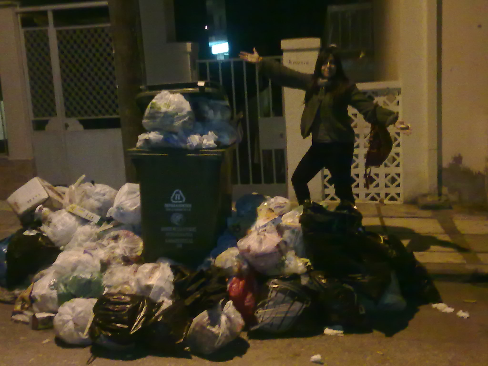

Όνομα:Ηροδότου Αναστασία
Email: @auth.gr

Eίδος μικρού δεινόσαυρου που απαντάται συνήθως στην Πολυτεχνική Σχολή του Α.Π.Θ, ευρύτερα γνωστό ως electrosaur. Περνά τις ώρες του παρακολουθώντας μαθήματα, πίνοντας καφέ στο κυλικείο και παίζοντας μπιρίμπα τα βράδια. Σχετικά κοινωνικό είδος, με αδυναμία στη nutella και μεγάλη αγάπη για τον ύπνο.
| Το καλύτερο | Όνομα | Πού βρίσκεται |
| Φαγητό | Brothers in law | Άθωνος |
| Τρίγωνο Πανοράματος | Ελενίδης | Ναυαρίνου με Τσιμισκή |
| Γαλακτομπούρεκο | Γαλυφιανάκης | Κωνσταντίνου Παλαιολόγου 3 |
| Προφιτερόλ | Αλεξούδας | Μακεδονίας 20 |
| Μιλφέιγ | Κωνσταντινίδης | Παύλου Μελά 14 |
| Τσουρέκι | Τερκενλής | Τσιμισκή με Αριστοτέλους |